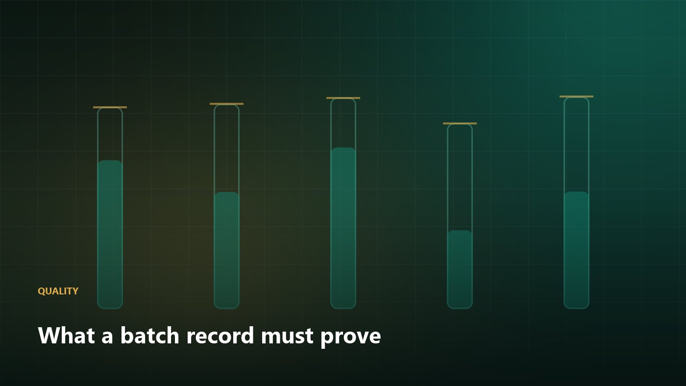

Quality
What a batch record must prove before a buyer accepts it
A certificate of analysis is a claim. The batch record is the evidence. Here is what overseas buyers actually audit.
AWA Quality Assurance
6 min read

Any supplier can issue a certificate of analysis. The question a serious buyer asks is not whether the numbers are within specification, but whether the numbers can be shown to belong to the material in the container. That distinction is what a batch record exists to settle.
The five evidence chains we maintain
- Material traceability — every input lot number linked to the finished lot, including packaging and processing aids.
- In-process data — temperature, pressure, time and yield recorded at the point of generation, not reconstructed afterwards.
- Deviation handling — an honest log of what went off-plan, with the disposition decision and who made it.
- Release testing — analytical results tied to instrument calibration records and reference-standard traceability.
- Retention samples — enough material held for the stated shelf life to allow re-testing if a market complaint arrives.
Why buyers in North America and Europe ask for more
Regulated buyers inherit liability for the material they import. Their quality team is therefore not assessing your competence in the abstract; they are assessing whether they can defend their own decision to an inspector two years from now. Documentation that reads as an after-the-fact summary creates doubt. Documentation with timestamps, initials, corrections that are struck through rather than erased, and instrument calibration certificates attached creates confidence.
Red flags on the buyer side
The same logic applies in reverse. Be cautious of a customer who will not state a specification, who resists an audit, or who asks you to alter a test result to clear a shipment. Those relationships end badly, usually with the supplier holding the liability.
We provide batch records, deviation logs, calibration certificates and retention-sample commitments as a standard part of the supply documentation pack, and we welcome technical audits at our facility or remotely.
Have a question this article did not answer?
Send it to our regulatory and quality team. We answer in writing, within one business day.